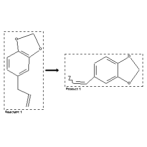

|  |
| FA | RX(1); FLST(1); RX(1) |
Reaction (1 of 1)
| Reaction ID | 5706792 |
| Reactant BRN | 136380 |
| Reactant | alcoholic KOH-solution; 5-allyl-benzo[1,3]dioxole |
| Product BRN | 82640 |
| Product | 5-propenyl-benzo[1,3]dioxole |
| No. of Reaction Details | 1 |
Reaction Details (1 of 1)
| Reaction Classification | Chemical behaviour |
| Comment | Handbook |
| Citation Pointer | 501380; Journal; Ciamician; Silber; GCITA9; Gazz.Chim.Ital.; 20; 1890; 571; CHBEAM; Chem.Ber.; 23; 1890; 1160;500454; Journal; Eijkman; CHBEAM; Chem.Ber.; 23; 1890; 862; |
Reference (1 of 2)
| Citation Number | 500454 |
| Document Type | Journal |
| Authors | Eijkman |
| CODEN | CHBEAM |
| Journal Title | Chem.Ber. |
| (Series) Volume | 23 |
| Publication Year | 1890 |
| Page | 862 |
Reference (2 of 2)
| Citation Number | 501380 |
| Document Type | Journal |
| Authors | Ciamician; Silber |
| CODEN | GCITA9; CHBEAM |
| Journal Title | Gazz.Chim.Ital.; Chem.Ber. |
| (Series) Volume | 20; 23 |
| Publication Year | 1890; 1890 |
| Page | 571; 1160 |